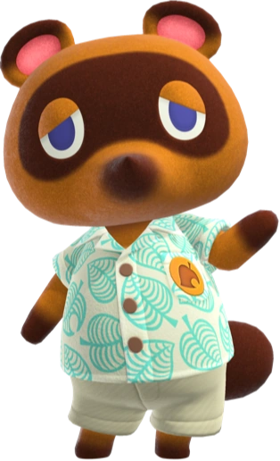

Tom Nook
Tom Nook es un personaje especial que desempeña el papel más importante en todos los juegos de
Animal Crossing. Se lo denomina un mapache en las versiones occidentales de los juegos pero es
un tanuki en las versiones japonesas.
En todos los juegos hasta New Leaf, él es el gerente de la tienda del pueblo, Almacenes Nook.
Después de la expansión final, Nook's, empleará a sus "sobrinos" Tendo y Nendo, que trabajan en
el segundo piso en todos los juegos de Animal Crossing, excepto Animal Crossing: New Leaf.